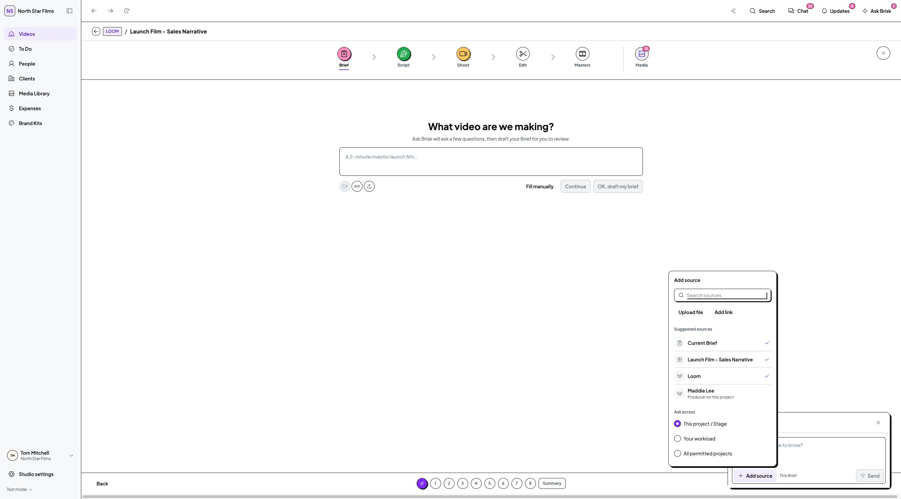
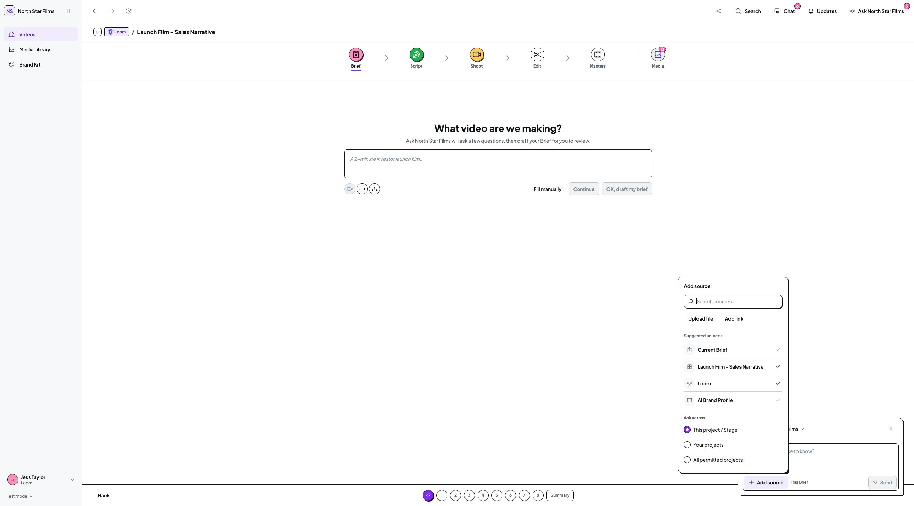
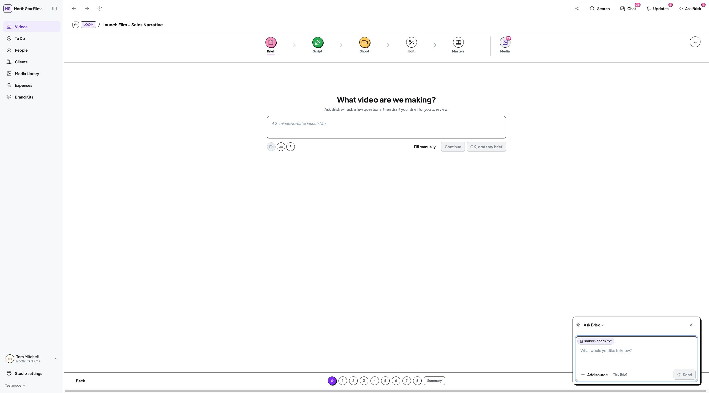

Latest refinement: Ask across has been removed on Tom's instruction. Search, suggestions, file and link actions remain. View the current screenshot. Earlier captures below document the previous iteration.
30 October 2026 · Implemented · Awaiting Tom's visual review
Source search, suggested pages/projects/people, file and link attachment, and Ask across choices now share one Add source panel. The active scope is quiet text inside the composer. No separate context dropdown or Mention a source step.

Search and selection, no results, scope changes, local file attachment, link entry, optional @ shortcut, Escape/focus return and draft retention were checked. Client and restricted Freelancer views retained their source boundaries. Native desktop captures used 1280px and 2660px windows. TypeScript, Brief HTTP 200 and diff checks passed.


This is a front-end reference: files attach as local metadata and links are retained without fetching their contents. There is no backend upload or AI content processing. Your working records, mock arrays, assets, dependencies and permissions were unchanged. No messages, approvals, tests, production build, commit or push.